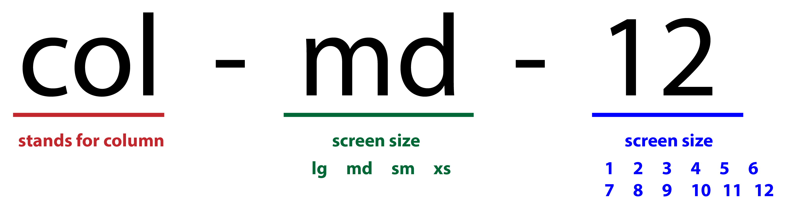
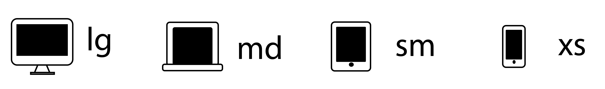
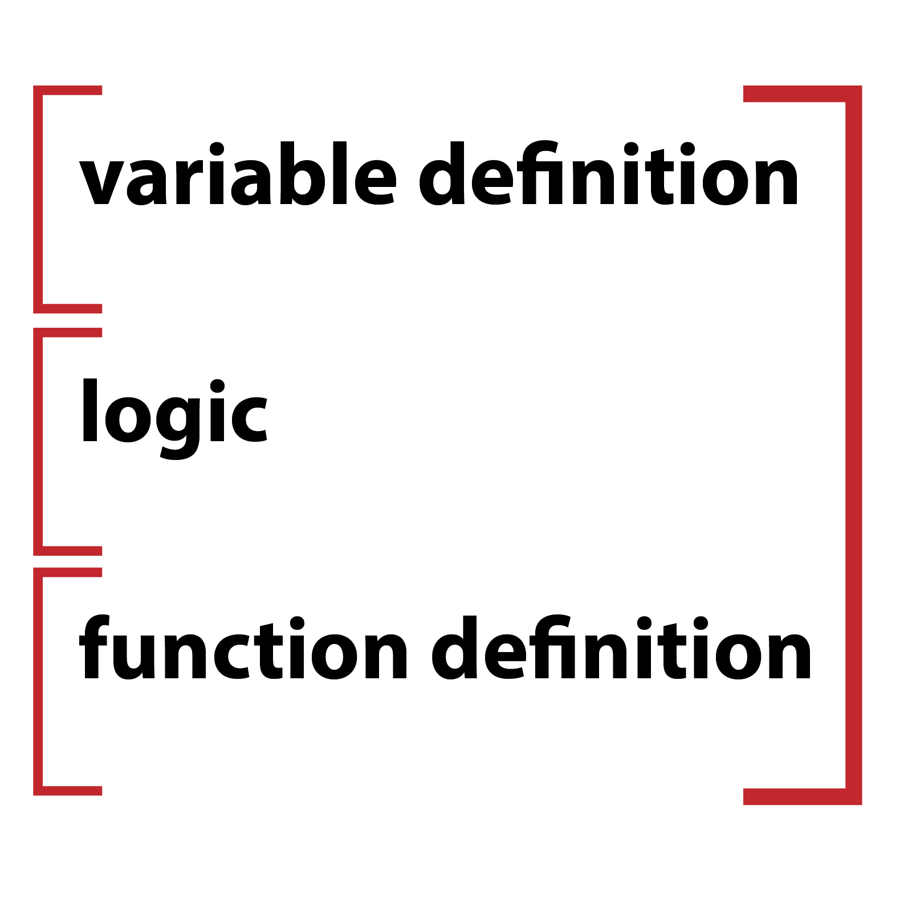
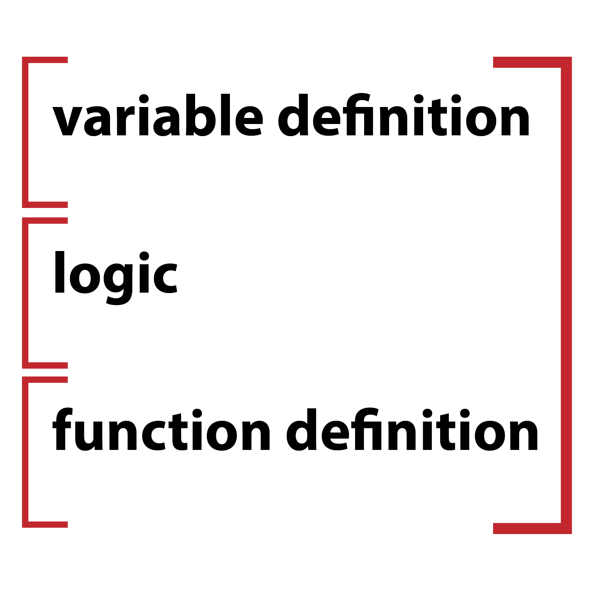

As mentioned before, bootstrap has 12 columns. To use those columns you need to use the col-md-# format. This stands for column-screensize-number of columns. The screen sizes are represented with xs, sm, md, and lg. As shown below, these different screen sizes are meant to represent the different types of devices. xs is for phones, sm is for tablets, md (which I use in my examples) represents laptop computers and lg is for desktop monitors. When calling the column styling, you need to remember that these are all lowercase. Bootstrap will not understand the class if you use camel case or capital letters.
 Function Structure
Week 1
javascript
Functions are a huge part of JavaScript as well. The main use for functions is to create a way to make the browser do something as a reaction to what the user is doing. For example: if the user clicks a button or a link, the browser does something. Using the proper structure in a function can make your career as a developer. If your functions break, then your webpage most likely won't do anything. Below, are two images representing 1) the correct structure of a function and 2)a good order to write your functions in. The second image is just an idea, and is not the only way to handle writing functions. It's showing that if you declare your variables that are needed in the function first, then write the logic and lastly write what the function should do and when, then you will have a good result pretty much every time.
 
